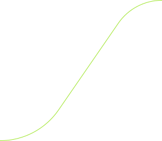
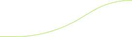
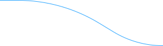
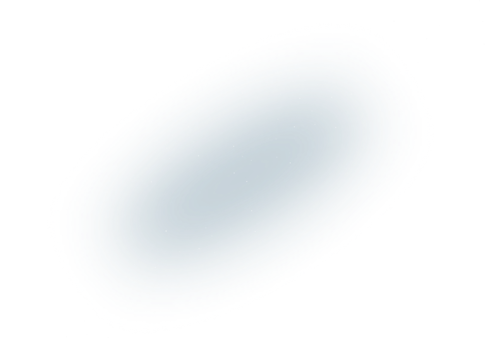
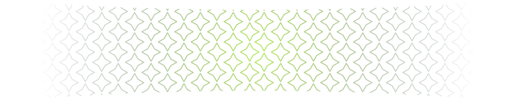
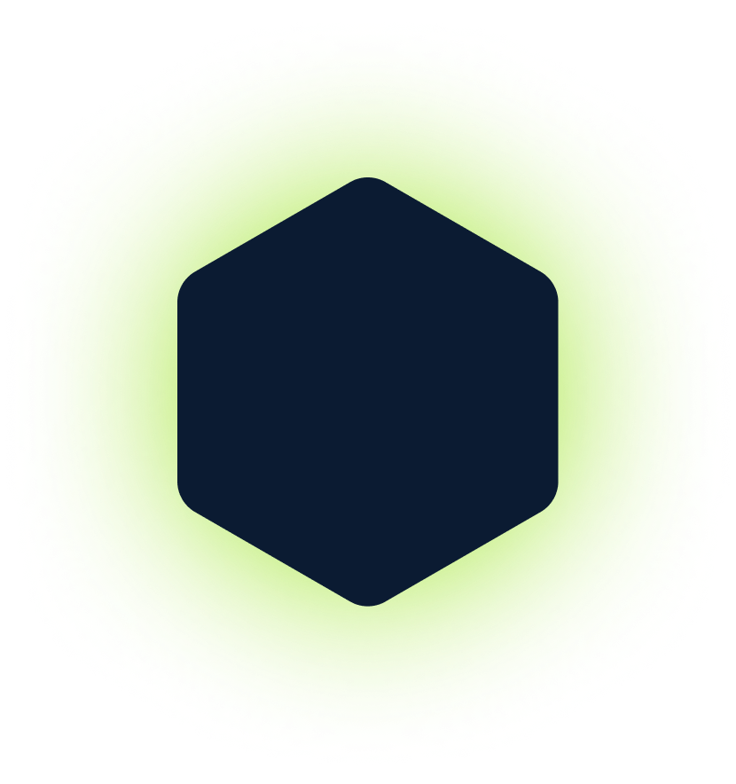
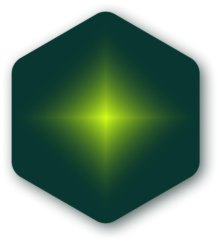
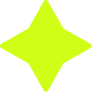
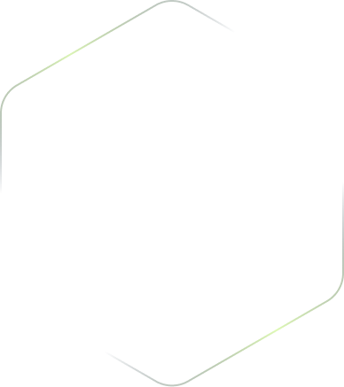

Уровень 30/100
Данияр




Неделя 1
Неделя 2
Неделя 3
Неделя 4
Quest 11
Quest 12
Урок выполнен на
Чему научитесь:
Навыки, которые вы освоите
Требования:
Вы остановились на
Go Quest 9
Продолжить обучение






Основы синтаксиса
Новый навык получен!
Вы прошли Quest 02, Quest 03 и Checkpoint 1. Теперь вы пишете на Go с нуля: пакеты, переменные, условия, циклы и функции.